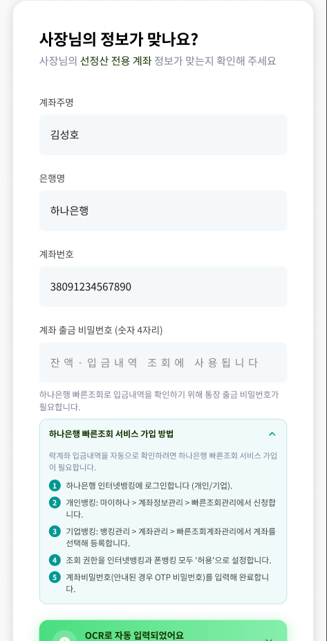

페이허그 앱에는 신청 화면이 없습니다. 하나은행 인터넷뱅킹에 직접 들어가서 하셔야 합니다.

「하나은행 빠른조회 서비스 가입 방법」 안내를 펼쳐서 보여주기만 합니다.
하나은행 인터넷뱅킹에 직접 로그인해서 빠른조회를 신청합니다.
하나은행 인터넷뱅킹에 로그인합니다 (개인/기업).
개인뱅킹: 마이하나 > 계좌정보관리 > 빠른조회관리에서 신청합니다.
기업뱅킹: 뱅킹관리 > 계좌관리 > 빠른조회계좌관리에서 계좌를 선택해 등록합니다.
조회 권한을 인터넷뱅킹과 폰뱅킹 모두 '허용'으로 설정합니다.
계좌비밀번호(안내된 경우 OTP 비밀번호)를 입력해 완료합니다.
락계좌에 매출 대금이 들어온 것을 페이허그가 자동으로 확인하려면 빠른조회가 켜져 있어야 합니다. 가입 전에는 「빠른조회 가입 다시 확인하기」 화면에서 멈추고, 입금계좌 등록(STEP 7)으로 넘어가지 않습니다.
"이건 저희 앱에서 대신 해드릴 수가 없어요. 하나은행 인터넷뱅킹에 직접 로그인하셔서 빠른조회를 신청하셔야 합니다. 인터넷뱅킹이랑 폰뱅킹 둘 다 '허용'으로 켜주셔야 해요."